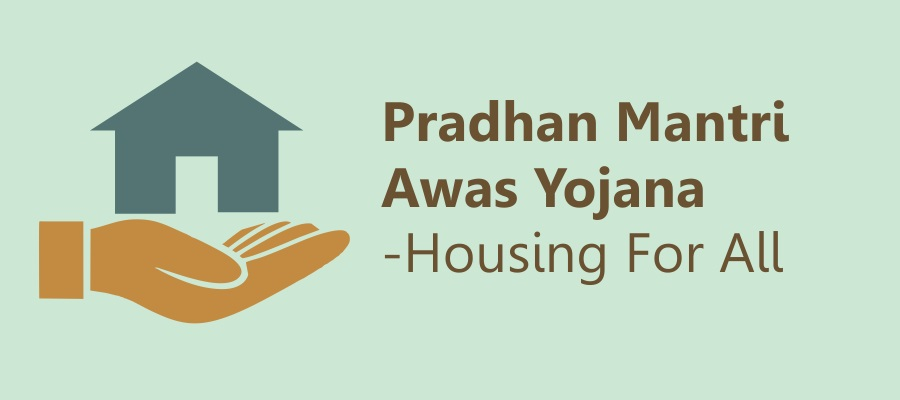

Aim to Change

Pradhan Mantri Awas Yojana (PMAY)
Pradhan Mantri Awas Yojana (PMAY)
Launched: 25 June 2015
Main Objective: Achieve housing for all by the year 2022, 2 crore in Urban and 3 Crore homes in Rural areas.
Pradhan Mantri Awas Yojana is an ambitious scheme of Narendra Modi Government
Income eligibility criteria for Pradhan Mantri Awas Yojana has been revised by introducing a new income level category. As per the new income eligibility criteria, people with higher income can also avail subsidy on housing loans. Prime Minister Narendra Modi also announced the increase in the home loan amount on 31st December.
The government has now also increased the PMAY home loan tenure from 15 to 20 years. As per the earlier scheme, people with annual income below Rs. 6 lakh can avail housing loans under the Pradhan Mantri Awas Yojana with interest subsidy of 6.5% for a maximum 15 years. The earlier scheme is however kept unchanged and new PMAY home loan schemes have been introduced.
Below are the details of new income eligibility criteria for availing home loans under Pradhan Mantri Awas Yojana – Urban
PMAY Home Loan Income Eligibility Criteria
Maximum Annual Income Loan Amount Interest Subsidy Maximum Tenure
6 Lakh (Old Scheme) 6 Lakh 6.5% 20 Years
12 Lakh 9 Lakh 4% 20 Years
18 Lakh 12 Lakh 3% 20 Years
The maximum loan tenure for the earlier scheme was 15 years but now PMAY beneficiaries can avail housing loan for up to a maximum of 20 years from any of the PLI’s, Banks & HFC’s for Home Loan under PMAY.
As per the new home loan scheme, people having annual income of up to Rs. 18 Lakh can avail housing loan benefits under PM Awas Yojana for urban. The government is already disbursing loans under the earlier scheme for which the maximum annual income is 6 Lakh. The loans under the PMAY home loan schemes can be availed for new construction, purchase of a house or for refurbishing a houses which not suitable for habitation.
The benefits of the scheme can also be availed by the government employees provided they pay the income tax.
The government is inviting online applications for PMAY for assessments of candidates through its official website pmaymis.gov.in.